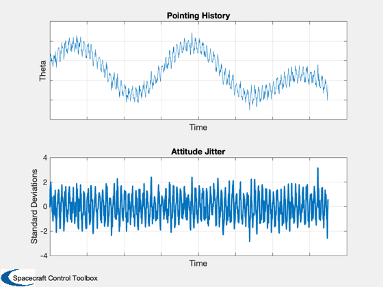

Displays different kinds of jitter.
------------------------------------------------------------------------
References: French, James R. and Griffin, Michael D., Space Vehicle Design,
American Institute of Aeronautics and Astronautics, Inc.,
Washington, DC, 1991.
Contents
tau = 3;
w = 2*pi/tau;
t = linspace(0,2.5*tau,1000);
for k = 1:length(t)
dist1(k) = 0.1*sin(w*t(k));
dist2(k) = 0.03+0.05*(sin(w/3*t(k))+cos(w/1.5*t(k)));
dist3(k) = (0.03)*sin(30*w*t(k))+ randn*0.015;
end
Add desired angle
theta = 30;
Plot
h = NewFig('Jitter Demo');
subplot(2,1,1)
plot(t,theta+dist1+dist2+dist3);
title('Pointing History')
xlabel('Time')
ylabel('Theta')
set(gca,'XTickLabel','')
set(gca,'YTickLabel','')
grid
subplot(2,1,2)
sig = std(dist3);
plot(t,dist3/sig,'linewidth',2);
title('Attitude Jitter')
ylabel('Standard Deviations')
set(gca,'XTickLabel','')
xlabel('Time')
grid
Watermark('Spacecraft Control Toolbox',h);
